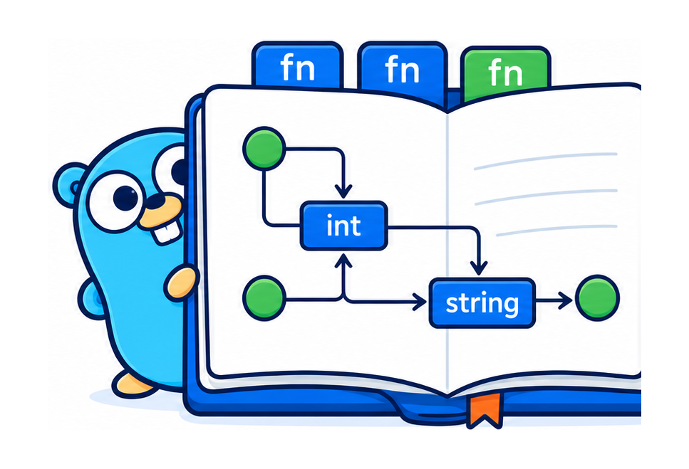

A cell is a function. The dependency graph is derived by the Go type checker, and it runs as compiled Go in your browser — no server, no kernel, no notebook file.
Drag a slider. The boxes are cells, the lines are which feeds which — watch the wave light the graph before the curve below even moves. The graph isn't a diagram of the notebook; it is the notebook.
The thing you just dragged is this file. No framework import. No .ipynb. Nothing from this project — just Go and the standard library. A cell is a top-level function; the graph is its parameter names.
//go:notebook package capacity // Incoming jobs per hour. //notebook:slider min=0 max=5000 step=50 func arrivalRate() (lambda PerHour) { return 1200 } // Servers in the fleet. //notebook:slider min=1 max=256 func servers() (c int) { return 80 } // Offered load in Erlangs. `lambda` and `mu` wire in by name+type — that's the edge. func offeredLoad(lambda, mu PerHour) (a Erlangs) { return Erlangs(float64(lambda) / float64(mu)) } // Server utilization. `a` and `c` come from the cells above, by name. func utilization(a Erlangs, c int) (rho float64) { return float64(a) / float64(c) }
Every notebook is a plain Go package, compiled to WebAssembly and running right here in your browser — a notebook is browser-portable only if it touches no net, os, or cgo, and the toolchain derives that from the call graph. Several were ported from marimo's gallery (porting them found real bugs); others are originals built to put one mechanism on stage — including a few that render not a chart but a document: an invoice, a table, a heatmap, drawn in HTML because that is the medium the answer takes.
An M/M/c fleet-capacity model. Drag arrival rate and server count; watch cost and latency curves recompute through the derived graph.
Least-squares fitting by hand. Drag a data point or the polynomial degree; the fit follows live. The design's falsification test for direct manipulation.
Bayesian linear regression (Bishop §3.3). Add data and the posterior collapses onto the truth; scrub back and it re-widens — because it's a pure function of sums, not a fold.
Summary statistics lie. Drag the scatter into any shape — a dinosaur, a line — and the mean, variance, correlation, and fitted line scarcely move. Only the plot shows what the numbers hide. Every point is a grip.
Three bodies under gravity. Forward Euler's orbits look fine — but the energy plot beside them shows it manufacturing energy every step, while symplectic Verlet stays flat. The bug is invisible until you plot the invariant.
Gray-Scott reaction-diffusion: spots, stripes, and mazes from two numbers. Scrub the step count to grow the pattern. The grid update is embarrassingly parallel — the fan-out is real natively and absent in the single-threaded tab, the WASM caveat as the exhibit.
A shaded 3D surface spinning on the GPU. The corpus's deliberate exception: WebGL has no Go form, so this one drops to raw HTML/JS — the framework boundary, labeled. Go still owns the math (the heightfield); the GPU only draws it.
Conway's Life on a WebGPU compute shader — a quarter-million cells stepping many times a second. The answer to turing's caveat: the parallel dividend, back in the tab, on the GPU. Go owns the seed grid; the shader owns the iteration.
A phase transition you can scrub. Fill a grid with probability p; drag it up through p_c ≈ 0.593 and a spanning cluster suddenly lights up top to bottom. Pure (grid, union-find, spanning test), so you can sweep back and forth across the transition exactly.
Predator and prey, one trajectory drawn two ways — a time series and a phase portrait, both reading the same run, both redrawing from one edit. Drag the starting point on the phase plane to pick a different orbit. The dependency graph forks trajectory → {series, portrait}.
The Central Limit Theorem, and why it needs purity. Sculpt any wild population by dragging its bars; the distribution of the sample mean beside it stays a bell. Scrub n back down and it un-converges — reversible because it's pure, not a fold.
What did the classifier learn? A logistic-regression decision surface over two draggable clouds. Drag a point across the line and watch the boundary chase it; drag an outlier and turn regularization up to watch L2 refuse to chase it. Two grip leaves on one chart.
Any closed curve is a sum of rotating circles. Drag a star's vertices; scrub the number of circles and watch the reconstruction sharpen onto the corners — Gibbs ringing appearing and vanishing as you slide, because it's pure, not a fold.
k-means, and why initialization ruins your day. Drag the initial centroids and watch the clustering change; step the seed and watch the converged inertia jump between local minima — same data, same k, a different answer. Lloyd's iteration as a pure cell.
A signal three ways — waveform, spectrum, spectrogram — all from one source. Switch the analysis window from rectangular to Hann and watch spectral leakage collapse: the skirts around each tone were an artifact of the window, not the signal.
Nines, in series and in parallel. A request path (load balancer → app tier → database) as a reliability block diagram: availabilities in series multiply, so the whole is worse than its worst part. Add a replica and watch the nines jump — an SRE budget tool.
Little's Law: L = λ·W, concurrency = throughput × latency, drawn as an area. The units carry the law — PerSecond × Seconds is the only product that typechecks to Requests, so you can't wire a rate into a latency slot. The dimensional discipline, in three cells.
The critical path of a build pipeline, where speeding up a task does nothing. Drag lint to zero — the finish doesn't move, because it had slack. The reflexive one: go-notebook's derived graph above a subject that is itself a task DAG.
Why more cores stop helping. speedup = 1/((1−p)+p/n) — the serial part sets a hard ceiling, so 95% parallel caps at 20× forever. Drag it and watch the curve flatten against the wall; Gustafson's line shows the escape hatch (grow the problem, not the cores).
Compute-bound or memory-bound? The roofline: a bandwidth slope meeting a peak-compute plateau at the ridge. Drag a kernel's arithmetic intensity across the ridge and the verdict flips — left of it, faster cores do nothing, because the cores are already waiting on memory.
Fleet cost and carbon — the two numbers on a procurement request. Drag the spot fraction and the bill drops while the carbon doesn't move a gram: cost is what you pay, carbon is energy used. The units keep dollars and kilograms from ever crossing.
Your autoscaler is a PID controller — here's the step response. Load jumps; drag the three gains and see the failures every operator has caused: too much Kp rings, no Ki droops off target, too much Kd saws the replica count while the queue looks fine. The control loop is a fold run to a fixed horizon in one cell, so scrub it both ways.
Watch a healthy service tip into metastable collapse. Retries are more load on a drowning server, so goodput cliffs — and backing the load off doesn't bring it back. The phase loop (goodput vs offered) traces a loop you can't retrace; that enclosed area is the trap. Arm the circuit breaker and watch the loop snap shut.
The Slurm scheduler trick that cuts wait without cutting the line. FIFO lets one wide job block the queue behind it; EASY backfill streams small jobs into the idle gaps — and the blocking job still starts at the same tick. Toggle the policy, read the Gantt chart like squeue: same jobs, tighter packing, median wait halved.
The best cache-eviction rule depends on the workload — here's the proof. On recency traffic LRU wins and its hit-rate cliffs then plateaus (2× the cache buys nothing); on popularity traffic LFU wins. Flip the workload and watch the two curves swap places. The "is more cache worth it?" decision, replayed not formula'd.
Why your fast link feels slow — and when it doesn't. Transfer time is latency + size/bandwidth, so a small file pays only the latency and a fat pipe buys nothing. Compare a near link and a far fat one; slide the file size across the crossover and watch the winner flip. Units keep milliseconds and megabits from ever crossing.
The TCP sawtooth that makes the internet fair. Additive increase, multiplicative decrease: one flow climbs and halves forever; two flows starting unequal converge to a fair share. Flip the decrease from multiplicative to additive and watch fairness break — the whole Chiu–Jain argument in one drag.
Why a 10-gigabit link can run at dial-up speed. Throughput is capped at window/RTT, so filling a link needs a window as big as its bandwidth-delay product. The classic 64 KB window fills 0.03% of a fat long pipe. Sweep the window and watch throughput knee up to line rate exactly at the BDP.
The cluster interconnect trade nobody sees until the all-to-all crawls. A non-blocking fat-tree scales bisection bandwidth with node count; oversubscribing the upper tiers saves switch budget but compounds — 2:1 per tier over four tiers is 8× slower, not 2×. Drag depth and fatness; watch the upper links thin and the bisection cut starve.
Zoom the Mandelbrot set until float64 runs out of mantissa and the boundary goes blocky — the numerical edge of double precision, on screen. Every pixel is an independent escape-time calculation, so the whole image is a pure function of the viewport; drag the center and zoom and it recomputes from scratch.
A cloud bill, not a chart. Drag the fleet knobs — instances, spot mix, egress, committed-use tier — and a styled HTML invoice re-totals live, line items to the bold TOTAL DUE. Go owns the pricing; the view is deferred to HTML because the answer is a document. The same file you'd run as a batch job to emit the number finance approves.
Simpson's paradox, on the real 1986 kidney-stone data: Treatment A wins the small-stone group and the large-stone group, yet loses the pool. The reveal is a table — you read A, A … then the TOTAL row flips to B — so the view is an HTML table a bar chart couldn't be. Drag the case mix and watch the paradox switch on and off.
Add a server, move a few keys — not all of them. Servers and keys sit on a hash ring; a key belongs to the next server clockwise. Toggle "add a server" and compare: consistent hashing moves ~1/N of the keys, plain key % N moves nearly all. The ring is the picture, colored by owner; the churn count is the proof.
When is the cluster busy? A 7 × 24 utilization heatmap — one box per hour of the week, darker = busier — that answers "where's the headroom?" at a glance. The load model is pure Go; the picture is a CSS grid with hover, because a heatmap is a grid of colored boxes and HTML does that natively. Drag the knobs to reshape the week.
A live sensor dashboard — gauges and a rolling chart driven not by a slider but by a feed. A small driver samples the machine's metrics and pushes each reading to the notebook's set port; the notebook is pure cells reacting. The impure edge (the clock, the sampling) lives in the driver, outside the graph.
A smart-home controller, both directions over one port. A bridge feed (Hue/Matter) pushes sensors in — motion, temperature, ambient light; the notebook computes, purely, what the lights should do; the driver reads those decisions out of the event stream and applies them. Turning a light on isn't something a cell does — it's a boolean a cell computes and the driver subscribes to.
A live price ticker. A driver streams trade ticks from an exchange and pushes each to the notebook; the notebook derives the last price, a moving average, and the spread — pure, no socket, no timer. The rolling window lives in the driver, because a cell is stateless; the math lives in the graph.
Where is the ISS right now? A driver polls a public JSON API on an interval and pushes the live position; the notebook plots it on a world map and reads out the coordinates — the "poll a REST feed" shape, the most common live-data pattern of all. The poll lives in the driver; the notebook stays a pure function of the position.
The last four take a live feed: they run in your browser like the rest, but their gauges move when a small companion driver pushes real data to the notebook's one set port — a feed is just a program with its hand on the knob (see docs/live-feeds.md). A few notebooks beyond these — the marimo ports that stream a file too big for memory or benchmark across real cores — need a laptop or a cluster, not a tab. All in the repo →
Every notebook has a dependency graph — which cell feeds which. In Jupyter it's implicit and you maintain it in your head; in most reactive notebooks it's a side panel bolted on for explainability. Here it's derived by the Go type checker from nothing but your function signatures — a cell's named result feeds any cell that takes a parameter of the same name and type — so it can't drift from the code, because it is the code.
That's why the demos lead with it, and why watching a wave propagate through it is the best debugger in the system: you can see exactly what recomputes and in what order, live, with no server and no instrumentation. No other notebook can show you this, because in every other notebook the graph is incidental. It's the artifact.
A Pyodide-based notebook ships 10 MB+ of interpreter before your code and cold-starts in seconds — because it ships an interpreter, and this ships a compiled program.
One limit worth naming: in the browser, GOOS=js is single-threaded, so independent cells run serially — the scheduler's goroutine fan-out is a native-only dividend. It's invisible on these demos and would matter on a compute-heavy notebook; native builds (your laptop, an HPC node) fan out across cores.
The demos above are the notebook compiled to WebAssembly. Compile it for your cluster instead and it's a single static binary — no Python environment to reconstitute, no kernel, no spawner. The artifact that produced the figure is the artifact you rerun in six months.
$ go tool notebook build ./capacity # one static binary, no cgo $ scp capacity hpc:~ && ssh hpc $ sbatch ./capacity --headless \ --set servers=120 --set lambda=1400 --json {"cost": 120.72, "meets": true, "wq": 4.1, ...}
Interactive on your laptop, a slider in the browser, and a batch job on the cluster — the same file, distinguished only by where you put the compiler. That last part is the thing no interpreter-based notebook can say.